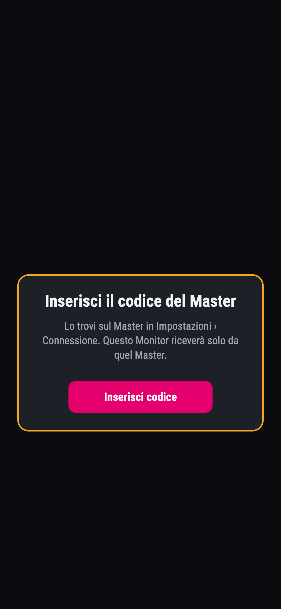
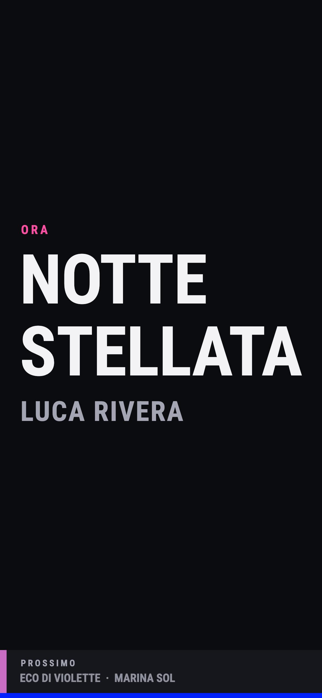
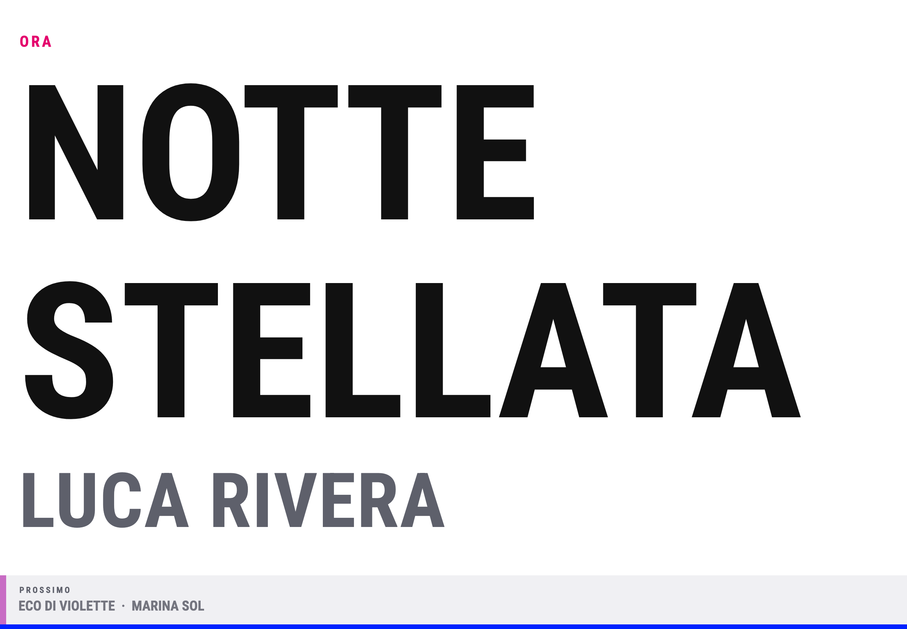

Primi passi (Master)First steps (Master)
Se il repertorio è vuoto, sulla home Master compaiono Prova con brani di esempio e, sotto, Aggiungi brano. Il tutorial interattivo ti fa aggiungere brani alla scaletta, riordinarla, toglierne uno e scegliere il brano «ora». Alla fine puoi tenere o rimuovere i soli brani di prova. Puoi rivederlo da Impostazioni › Guida › Primi passi.
If the library is empty, the Master home shows Try with sample songs and, below, Add song. The interactive tutorial walks you through adding songs to the setlist, reordering, removing one and picking the current «now» song. At the end you can keep or remove only the demo songs. Replay it from Settings › Guide › First steps.
Primo avvio e scelta ruoloFirst launch and role
All'apertura scegli se il dispositivo sarà Master o Monitor. Il Master tiene i brani e la playlist e decide quale brano è «ora»; i Monitor mostrano solo ciò che il Master invia.
On first open, choose whether the device will be Master or Monitor. The Master holds the songs and the playlist and decides which song is «now»; Monitors only show what the Master sends.
Il Master è protetto da PIN: dopo il ruolo scegli le 4 cifre e sei pronto. Il Monitor parte subito. Il nome del dispositivo viene dato in automatico; se vuoi lo cambi in Impostazioni › Connessione. Per cambiare ruolo in seguito: Impostazioni › Account › Logout e ripeti la scelta.
The Master is protected by a PIN: after the role, pick the 4 digits and you are ready. The Monitor starts straight away. The device name is set automatically; you can change it in Settings › Connection. To change role later: Settings › Account › Logout and choose again.
Collegare Master e MonitorLink Master and Monitor
Segui questi passi su tutti i dispositivi coinvolti (stesso ordine consigliato):
Follow these steps on all devices involved (same order recommended):
- Scegli il ruoloChoose your role — Su un dispositivo MASTER (PIN), sugli altri MONITOR. Per cambiare ruolo: Impostazioni › Account › Logout. — MASTER on one device (PIN), MONITOR on the others. To switch role: Settings › Account › Logout.
- Stesso collegamentoSame connection — Impostazioni › Connessione su entrambi: stesso trasporto, Bluetooth (consigliato) o Wi‑Fi locale. — Settings › Connection on both: same transport, Bluetooth (recommended) or local Wi‑Fi.
- Codice sul MasterCode on the Master — Impostazioni › Connessione: leggi il codice a 6 cifre. — Settings › Connection: read the 6-digit code.
- Codice sul MonitorCode on the Monitor — Impostazioni › Connessione: inserisci il codice e tocca Salva. — Settings › Connection: enter the code and tap Save.
- Attendi «Abbinato»Wait for «Paired» — Il Monitor riceve solo da quel Master. — The Monitor only receives from that Master.

Wi‑Fi locale: Master e Monitor sulla stessa rete Wi‑Fi (non serve internet). Bluetooth: entrambi con Bluetooth acceso; non serve la stessa Wi‑Fi. Il trasporto deve coincidere su ogni device.
Local Wi‑Fi: Master and Monitors on the same Wi‑Fi (no internet needed). Bluetooth: Bluetooth on on both; shared Wi‑Fi not required. Transport must match on every device.
Abbinamento con codicePairing with code
Il codice identifica il Master. Ogni Monitor deve conoscerlo prima di ricevere brani.
The code identifies the Master. Each Monitor must know it before receiving songs.
- Dove leggerlo: Master › Impostazioni › Connessione (6 cifre).
- Where to read it: Master › Settings › Connection (6 digits).
- Nuovo codice: sul Master «Genera nuovo codice» scollega i Monitor; devono inserire il codice aggiornato.
- New code: on the Master, «Generate new code» disconnects Monitors; they must enter the updated code.
- «Codice errato»: ricontrolla le cifre; su Monitor tocca Rimuovi e reinserisci.
- «Wrong code»: double-check digits; on Monitor tap Remove and re-enter.
- «Il Master ha raggiunto il limite»: piano gratis = 1 Monitor collegato; Pro o Full per più leggii (il ruolo Monitor resta gratis).
- «The Master has reached the limit»: free plan = 1 linked Monitor; Pro or Full for more stands (the Monitor role stays free).
Inviare i braniSend songs
Sul Master, un tocco su un brano in PLAYLIST (o in TUTTI I BRANI) lo rende attivo e lo invia subito a tutti i Monitor collegati. Sul Monitor compaiono il titolo grande (ORA) e il brano successivo (PROSSIMO).
On the Master, a single tap on a song in PLAYLIST (or ALL SONGS) makes it active and sends it immediately to all connected Monitors. The Monitor shows the huge title (NOW) and the next song (NEXT).

Il contatore Monitor in alto sul Master indica quanti leggii sono collegati e riceveranno il prossimo invio.
The Monitor counter at the top of the Master shows how many stands are connected and will receive the next send.
PlaylistPlaylists
- Modifica playlist: matita in alto — compare la striscia «Stai modificando la playlist». Tocca + accanto a un brano per aggiungerlo e − per toglierlo, trascina per riordinare in PLAYLIST. Svuota, accanto a PLAYLIST, toglie tutto (puoi annullare). Tocca Fine quando hai finito.
- Edit playlist: pencil at top — the «You're editing the playlist» strip appears. Tap + next to a song to add it and − to remove it, drag to reorder in PLAYLIST. Clear, next to PLAYLIST, removes everything (you can undo). Tap Done when finished.
- ORA: la pillola accanto alla matita mostra il brano in scena e ti riporta lì con un tocco.
- NOW: the pill next to the pencil shows the song on stage and takes you back to it with one tap.
Dal menu (⋮), sezione PLAYLIST:
From the (⋮) menu, PLAYLIST section:
- Salva playlist… le dà un nome; Apri playlist salvata… ne riapre una. Con una playlist aperta, Salva la aggiorna subito e Salva come nuova… ne crea una copia. Il nome compare accanto a PLAYLIST.
- Save playlist… gives it a name; Open saved playlist… reopens one. With a playlist open, Save updates it right away and Save as new… makes a copy. Its name appears next to PLAYLIST.
- Condividi playlist… verso altri device SendSong; Esporta in PDF.
- Share playlist… to other SendSong devices; Export as PDF.
- Le voci che ora non servono restano grigie, con il motivo scritto sotto.
- Items you can't use right now stay grey, with the reason written below.
Nella sezione VISTA, Solo brani senza PDF filtra la lista: una striscia sopra la lista lo ricorda e Mostra tutti i brani lo toglie.
In the VIEW section, Songs without PDF only filters the list: a strip above the list reminds you and Show all songs removes it.
La playlist in uso può restare aperta al prossimo avvio del Master.
The playlist in use can reopen on the next Master launch.
BraniSongs
Impostazioni › PDF (pagina «I tuoi brani»): qui gestisci titolo, autore e colore (barra visiva sul Monitor). Ogni modifica si salva da sola: non c'è nessun pulsante Salva.
Settings › PDF (page «Your songs»): manage title, artist and colour (visual bar on the Monitor). Every change is saved automatically: there is no Save button.
- Aggiungi: scrivi titolo e autore; se hai impostato la cartella PDF, SendSong propone subito lo spartito giusto («Consigliato»). Puoi cambiarlo, scegliere «Nessun PDF» o aprire altre opzioni (colore e posizione).
- Add: type title and artist; if you set a PDF folder, SendSong suggests the right chart straight away («Recommended»). You can change it, pick «No PDF» or open more options (colour and position).
- Primo brano: se non hai ancora brani tocca Aggiungi il primo brano: parte una procedura guidata in pochi passi: nome del brano, cartella dei PDF, conferma dello spartito.
- First song: if you have no songs yet tap Add your first song: a short guided setup starts: song name, PDF folder, chart confirmation.
- Cerca: il campo in alto filtra per titolo o autore (maiuscole e accenti non contano). Mentre cerchi il riordino è in pausa.
- Search: the field at the top filters by title or artist (case and accents ignored). Reordering pauses while you search.
- Collega il PDF: tocca l'icona PDF sulla riga e scegli dalla lista della cartella. Se il file non c'è, tocca Scegli file… e prendilo dal dispositivo (File, Dropbox, iCloud…).
- Link the PDF: tap the PDF icon on the row and pick from the folder list. If the file is not there, tap Choose file… and take it from the device (Files, Dropbox, iCloud…).
- Modifica o elimina: tocca il brano. Nella finestra trovi anche Elimina brano; se lo elimini per sbaglio tocca Annulla nell'avviso in basso.
- Edit or delete: tap the song. The window also has Delete song; if you delete one by mistake tap Undo in the notice at the bottom.
- Cartella PDF (opzionale): in Impostazioni › PDF, sotto la ricerca, tocca Scegli cartella (o Cambia) per abbinare i file per nome.
- PDF folder (optional): in Settings › PDF, below search, tap Choose folder (or Change) to match files by name.
Piano gratis: fino a 5 brani attivi; oltre serve Pro o Full (dopo la prova Pro i brani extra restano salvati ma con lucchetto).
Free plan: up to 5 active songs; beyond that you need Pro or Full (after the Pro trial, extra songs stay saved but locked).
Spartiti PDF sul MonitorPDF charts on the Monitor
I PDF restano sul Monitor (libreria locale). Gratis: fino a 5 spartiti (pedale e colori invertiti inclusi). Con PDF Monitor o Full non c'è limite; annotazioni e cartella collegata richiedono PDF Monitor o Full. Quando il Master invia un brano, SendSong prova ad associare uno spartito: per id, titolo normalizzato o suggerimento fuzzy — conferma o rifiuta dal banner.
PDFs stay on the Monitor (local library). Free: up to 5 charts (pedal and colour invert included). With PDF Monitor or Full there is no cap; annotations and a linked folder need PDF Monitor or Full. When the Master sends a song, SendSong tries to match a chart: by id, normalised title or fuzzy suggestion — confirm or dismiss from the banner.
- Importa PDF da Impostazioni › Monitor o dalla gestione spartiti.
- Import PDFs from Settings › Monitor or sheet management.
- Cartella spartiti (opzionale): in Spartiti PDF o Impostazioni › Monitor tocca Collega cartella: SendSong suggerisce il file più simile al titolo inviato dal Master (conferma o rifiuta dal banner). Alla conferma il PDF entra nella libreria locale del Monitor.
- Sheet folder (optional): in Sheet music PDFs or Settings › Monitor tap Link folder: SendSong suggests the closest file name to the song the Master sends (confirm or dismiss from the banner). On confirm the PDF is copied into the Monitor local library.
- Voltare pagina: tap sul bordo sinistro/destro (~35% schermo); al centro nessuna azione a zoom 1.
- Turn pages: tap left/right edge (~35% of screen); centre does nothing at zoom 1.
- Pedale / tastiera: frecce, Page Up/Down, Spazio, Invio.
- Pedal / keyboard: arrows, Page Up/Down, Space, Enter.
- Inverti colori nel menu (utile al buio).
- Invert colours in the menu (useful in the dark).
- Barra in basso sempre visibile: titolo, prossimo brano, pagina corrente.
- Bottom bar always visible: title, next song, current page.
- Annotazioni: tocca Annota; compare una barra orizzontale compatta (penna, evidenziatore, colori, undo, gomma, altro con cancellazioni confermate). Salvate solo su questo dispositivo.
- Annotations: tap Annotate; a compact horizontal bar appears (pen, highlighter, colours, undo, eraser, more with confirmed clears). Stored only on this device.
Sul Master, con il PDF aperto (doppio tocco su un brano), in basso a sinistra trovi Effetti (se MIDI è attivo) e Annota affiancati; i segni restano solo sul Master, separati dal Monitor.
On the Master, with the PDF open (double-tap a song), FX (when MIDI is on) and Annotate sit side by side at the bottom left; marks stay on the Master only, separate from the Monitor.
Monitor chiaro / scuroLight / dark Monitor
Sul Monitor puoi passare tra modalità palco scura e chiara (impostazioni o controlli rapidi). Scegli quella più leggibile con le luci del venue.
On the Monitor switch between dark and light stage modes (settings or quick controls). Pick what reads best under your venue lights.

Backup e ripristinoBackup and restore
Impostazioni › Backup mostra la data dell'ultimo backup e l'elenco di quelli salvati sul dispositivo (brani, playlist e collegamenti PDF). Tocca Crea backup per farne uno subito; per tornare indietro tocca Ripristina accanto al backup che vuoi. L'app ne crea anche da sola ogni tanto. I file restano sotto il tuo controllo; non li carichiamo su server.
Settings › Backup shows the date of the last backup and the list of those saved on the device (songs, playlists and PDF links). Tap Create backup to make one now; to go back tap Restore next to the backup you want. The app also makes one automatically from time to time. Files stay under your control; we do not upload them to servers.
RepertoriRepertoires
Ogni repertorio sul Master ha brani, playlist salvate e cartella PDF propri. Con il piano gratis hai un repertorio e fino a 5 brani attivi; con Pro o Full puoi crearne quanti ne servono. Se il piano scade, i dati restano sul dispositivo: resta utilizzabile solo il repertorio attivo finché non rinnovi. Quello che avevi già all'aggiornamento diventa Il mio repertorio.
Each repertoire on the Master has its own songs, saved playlists and PDF folder. On the free plan you get one repertoire and up to 5 active songs; with Pro or Full you can create as many as you need. If the plan lapses, data stays on the device: only the active repertoire stays usable until you renew. What you already had at the update becomes My repertoire.
Cambiare e gestireSwitch and manage
- Chip in cima alla lista brani sul Master: tocca il nome del repertorio attivo e scegline un altro.
- Chip at the top of the song list on the Master: tap the active repertoire name and pick another.
- Impostazioni › I tuoi brani › Gestisci repertori: crea, rinomina, elimina o imposta quale usare.
- Settings › Your songs › Manage repertoires: create, rename, delete or set which one to use.
Invia repertorioSend repertoire
Due Master sulla stessa connessione Wi‑Fi locale o Bluetooth: dal menu (⋮) o da Impostazioni › Invia repertorio. Durante l'invio compare una finestra di attesa con Annulla per fermare collegamento o trasferimento. Sul device che riceve compare una scelta:
Two Masters on the same local Wi‑Fi or Bluetooth connection: from the menu (⋮) or Settings › Send repertoire. While sending, a wait dialog with Cancel lets you stop the connection or transfer. On the receiving device you pick:
- Nuovo repertorio — importa tutto in un repertorio nuovo (serve piano Master sul ricevente).
- New repertoire — import everything into a new repertoire (Master plan required on the receiver).
- Unisci — aggiunge solo i brani che mancano nel repertorio attivo.
- Merge — adds only songs missing from the active repertoire.
- Sostituisci attivo — rimpiazza il repertorio attivo; SendSong crea prima un backup locale.
- Replace active — replaces the active repertoire; SendSong creates a local backup first.
- Annulla — ignora l'invio.
- Cancel — ignore the transfer.
Sul piano gratis l'import da un altro Master è limitato a 5 brani. I file PDF non viaggiano nella rete: restano sul dispositivo. SendSong ricollega gli spartiti per nome del file se la cartella PDF del ricevente contiene gli stessi PDF (es. cartella Dropbox condivisa su iPhone e iPad).
On the free plan, import from another Master is capped at 5 songs. PDF files do not travel over the air: they stay on the device. SendSong relinks charts by filename if the receiver's PDF folder holds the same files (e.g. a shared Dropbox folder on iPhone and iPad).
Effetti MIDI (solo Master)MIDI effects (Master only)
Con Effetti MIDI attivi sul Master compare il pulsante Effetti in basso a sinistra sullo spartito (accanto ad Annota se il PDF è aperto). Il pannello si apre come scheda ancorata al pulsante: tocchi i tasti e invii Control Change (CC) via Bluetooth MIDI (BLE MIDI) a processori vocali, pedalboard e altri device che accettano CC. Esempio: TC‑Helicon VoiceLive 3 Extreme con adattatore BLE sul DIN MIDI IN (Yamaha MD‑BT01, CME WIDI Master); i device con BLE MIDI integrato si collegano direttamente.
With MIDI effects enabled on the Master, an FX button appears at the bottom left of the chart (next to Annotate when a PDF is open). The panel opens as a card anchored to the button: tap tiles to send Control Change (CC) over Bluetooth MIDI (BLE MIDI) to vocal processors, pedalboards and other gear that accepts CC. Example: TC‑Helicon VoiceLive 3 Extreme through a BLE adapter on the 5‑pin MIDI IN (Yamaha MD‑BT01, CME WIDI Master); devices with built‑in BLE MIDI pair directly.
Non supportato: Bluetooth audio, USB MIDI o cavo DIN senza adattatore BLE; il BLE di SendSong per Master/Monitor resta separato dal collegamento agli effettori.
Not supported: Bluetooth audio, USB MIDI or DIN cable without a BLE adapter; SendSong’s BLE for Master/Monitor is separate from the link to your effects gear.
Attivazione e pianoEnable and plan
Impostazioni › MIDI › interruttore Effetti MIDI (spento di default). Quando è spento non compaiono il pannello né la scansione Bluetooth per gli effettori. La funzione è inclusa in Pro e Full (anche Full per sempre). Sul piano gratis resta spenta.
Settings › MIDI › MIDI effects switch (off by default). When off, no panel and no Bluetooth scanning for gear. The feature is included in Pro and Full (including Full for life). It stays off on the free plan.
Collegare adapter e deviceConnect adapters and gear
- Accendi l’adattatore BLE (o il device con BLE MIDI) e tienilo vicino al telefono/tablet Master.
- Power on the BLE adapter (or gear with BLE MIDI) and keep it close to the Master phone or tablet.
- Con Effetti MIDI attivo, apri il pannello e aggiungi un device: scegli il template VoiceLive 3 Extreme o Generico, collegalo dall’elenco Bluetooth e conferma.
- With MIDI effects on, open the panel and add a device: pick the VoiceLive 3 Extreme or Generic template, connect it from the Bluetooth list and confirm.
- Imposta il canale MIDI (1–16) uguale a quello di ricezione MIDI sul processore. Più device possono usare lo stesso adattatore via MIDI THRU su canali diversi.
- Set the MIDI channel (1–16) to match the processor’s MIDI receive channel. Several devices can share one adapter via MIDI THRU on different channels.
Pulsanti e templateButtons and templates
VoiceLive 3 Extreme include i CC di fabbrica: Harmony, Reverb, Delay, Double, HardTune, μMod, Transducer, Hit, Tutto spento, Tap. Generico ti fa creare pulsanti personalizzati (nome, numero CC 0–127, toggle o momentaneo). Impara legge il CC dal device. Sono disponibili anche Tap tempo e Tutto spento.
VoiceLive 3 Extreme ships with factory CCs: Harmony, Reverb, Delay, Double, HardTune, μMod, Transducer, Hit, All off, Tap. Generic lets you create custom buttons (name, CC number 0–127, toggle or momentary). Learn reads the CC from the device. Tap tempo and All off are available too.
Risoluzione problemi MIDIMIDI troubleshooting
- Nessun device in elenco: adapter acceso e vicino; interruttore Effetti MIDI attivo; permesso Bluetooth concesso; su Android, se richiesto, permesso dispositivi nelle vicinanze.
- No device in the list: adapter on and nearby; MIDI effects switch on; Bluetooth permission granted; on Android, nearby devices permission if prompted.
- CC senza effetto: canale MIDI dell’app = canale di ricezione sul processore; cavo DIN nell’IN dell’adattatore; prova un altro CC con Impara.
- CC does nothing: app MIDI channel = receive channel on the processor; DIN cable to the adapter’s IN; try another CC with Learn.
- Conflitto Bluetooth: Master/Monitor e MIDI effetti usano Bluetooth separatamente; tieni accesi solo gli adapter che ti servono sul palco.
- Bluetooth conflict: Master/Monitor and MIDI effects use Bluetooth separately; keep only the adapters you need powered on stage.
Piani e acquistiPlans and purchases
Impostazioni › Piano mostra il livello attuale. Acquisti e abbonamenti passano da App Store o Google Play; prezzi e rinnovi li gestisce lo store. Se i prezzi non compaiono (niente connessione o account dello store non collegato), il pulsante d'acquisto resta spento: controlla e tocca Riprova.
Settings › Plan shows your current tier. Purchases and subscriptions go through the App Store or Google Play; pricing and renewals are managed by the store. If prices do not appear (no connection or not signed in to the store), the buy button stays off: check and tap Retry.
- Gratis: 1 repertorio, 5 brani attivi, 1 Monitor collegato; Monitor gratis per titoli e scaletta; fino a 5 PDF sul Monitor.
- Free: 1 repertoire, 5 active songs, 1 linked Monitor; Monitor free for titles and setlist; up to 5 PDFs on the Monitor.
- PDF Monitor: spartiti illimitati, cartella collegata e annotazioni sul Monitor.
- PDF Monitor: unlimited charts, linked folder and annotations on the Monitor.
- Pro: brani e Monitor illimitati sul Master, repertori multipli, Effetti MIDI inclusi.
- Pro: unlimited songs and Monitors on the Master, multiple repertoires, MIDI effects included.
- Full: Pro + PDF Monitor; disponibile anche come acquisto unico (Full per sempre).
- Full: Pro + PDF Monitor; also available as a one-time purchase (Full for life).
- Prova Pro: 14 giorni al primo ingresso come Master, senza carta; poi torni al gratis o acquisti da Impostazioni › Piano.
- Pro trial: 14 days on first launch as Master, no card; then back to free or buy from Settings › Plan.
Se hai acquistato Full per sempre, in Impostazioni › Piano compare il badge verde «Full per sempre»: nessun abbonamento e nessun rinnovo. Nella pagina dei piani il pulsante indica «Hai Full per sempre» e gli altri piani risultano già inclusi.
If you bought Full for life, Settings › Plan shows the green «Full for life» badge: no subscription and no renewals. On the plans page the button reads «You own Full for life» and the other plans show as already included.
Tocca Ripristina acquisti dopo un reinstall o su un nuovo telefono (stesso account store). Su iPhone conferma l'Apple ID quando compare la richiesta: l'app ti dice se gli acquisti sono tornati o se per quell'account non ce ne sono. Gestisci abbonamento apre lo store.
Tap Restore purchases after reinstall or on a new phone (same store account). On iPhone confirm your Apple ID when asked: the app tells you whether the purchases came back or that account has none. Manage subscription opens the store.
Risoluzione problemiTroubleshooting
- Monitor su «Ricerca del Master»: stesso trasporto, permessi Rete locale / Bluetooth, Bluetooth acceso, stessa Wi‑Fi (se Wi‑Fi), codice corretto, app in primo piano. Evita reti ospiti che isolano i client.
- Monitor on «Searching for Master»: same transport, Local Network / Bluetooth permissions, Bluetooth on, same Wi‑Fi (if Wi‑Fi), correct code, app in foreground. Avoid guest networks that isolate clients.
- iOS: consenti Rete locale e Bluetooth quando richiesto.
- iOS: allow Local Network and Bluetooth when prompted.
- Android: Bluetooth e, se richiesto, permessi dispositivi nelle vicinanze / posizione solo per scansione BLE.
- Android: Bluetooth and, if asked, nearby devices / location permission for BLE scan only.
- Codice sbagliato o Master cambiato: vedi sezione Abbinamento.
- Wrong code or Master changed: see Pairing section.
Altre domande: Supporto o info@ritmodigitale.it.
More questions: Support or info@ritmodigitale.it.